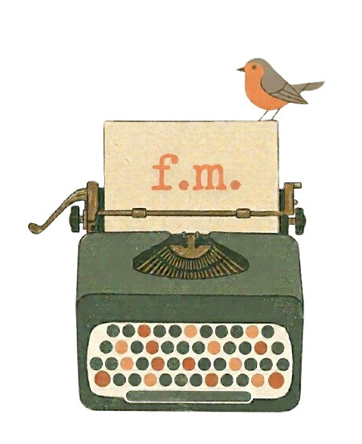
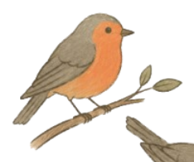
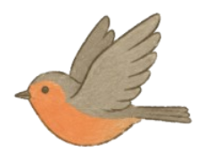
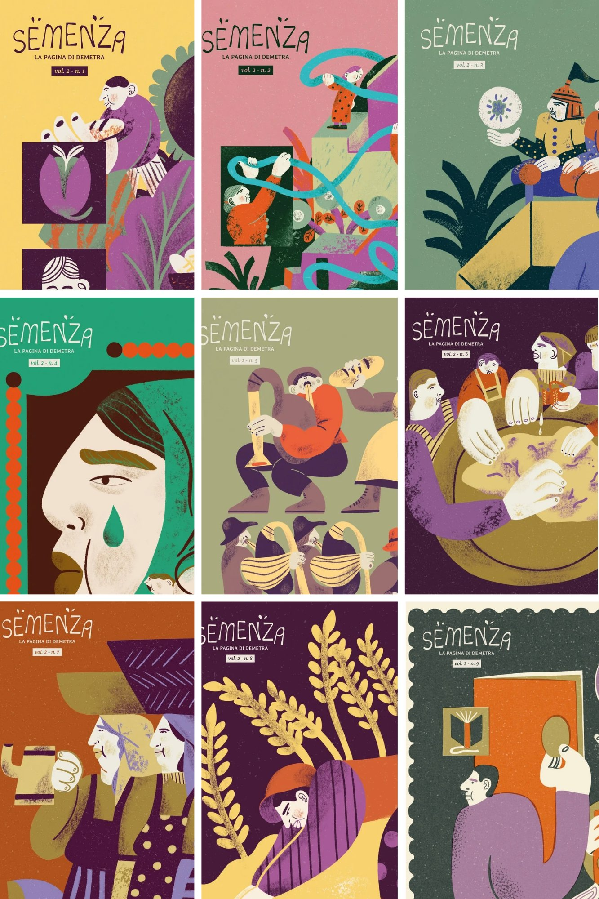
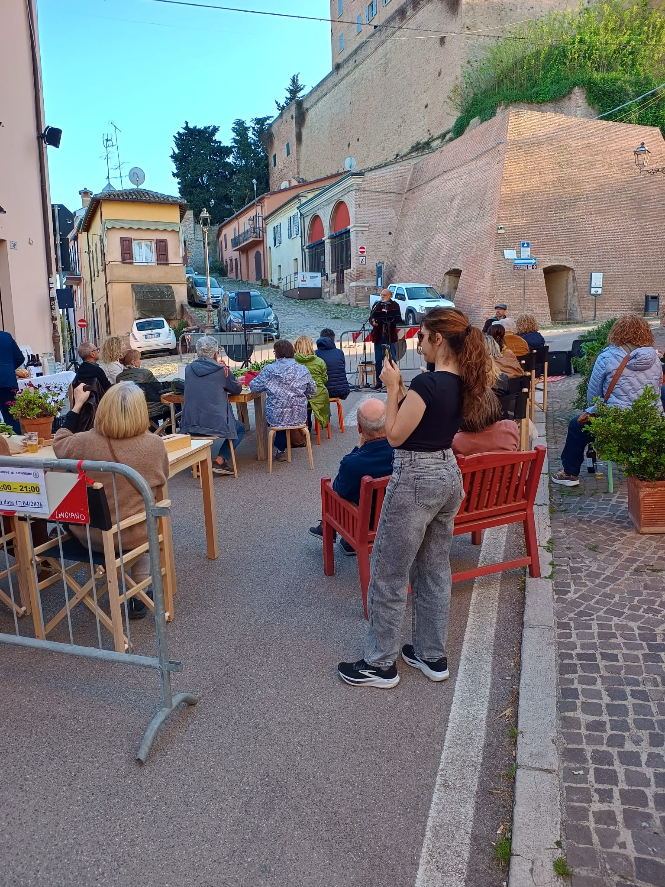
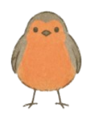
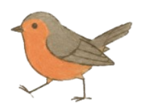
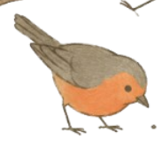

Racconto storie.Scrivo, progetto e costruisco narrazioni che prendono forma sulla carta, negli spazi e nei progetti. Per realtà che hanno qualcosa di buono da raccontare.
premi un tasto per iniziare
Mi occupo di editoria e cultura gastronomica, dando forma a progetti che mettono in relazione cibo, persone e contesti sociali. Scrivo, edito e progetto contenuti. Coordino eventi e costruisco storytelling attorno a realtà, luoghi e iniziative.

"Per anni ho cercato una direzione univoca, per poi capire che il valore stava proprio nel tenere insieme traiettorie diverse."
Diploma all'Istituto Alberghiero di Forlimpopoli, laurea in Arti Visive a Bologna, Master in Storia e Cultura dell'Alimentazione con Massimo Montanari. Un percorso trasversale che ha trovato il suo senso nell'incontro tra cibo, scrittura e cultura.


Rubrica mensile su carta per Demetra Forno di Paese. Testi a cura di Federica Muccioli, dal 2023. Oltre 20 numeri pubblicati tra cultura del cibo, donne, territorio.

Ideazione e organizzazione di eventi che usano il pane per attivare tematiche sociali. Presentazioni di libri, cinema, poesia, rassegne.
Archivio di ricette e storie per corrispondenza. Ogni ricetta viaggia per posta prima di arrivare online, organizzata per genere letterario.
Uno spazio letterario in cui il cibo è protagonista per mezzo delle parole
Nel presente che abitiamo, rinunciare alla carta da forno è diventato un gesto nobile. Noi abbiamo scelto di recuperarla in un'altra forma: uno spazio letterario in cui le ricette viaggiano per posta prima di arrivare online. Scrivi una ricetta con la storia che le appartiene, la spedisci. In cambio ne ricevi una.
Ogni ricetta nell'archivio è catalogata come fosse un romanzo. Perché ogni piatto, come ogni storia, ha un'anima: c'è la ricetta avventura, quella classica che profuma di famiglia, il giallo che svela l'ingrediente segreto solo alla fine, la poesia che si mangia con gli occhi. Classificare per genere non è un gioco fine a se stesso — è un modo per capire che tipo di storia stai per assaggiare.
Chiunque può partecipare. Basta una penna, un foglio e il desiderio di condividere non solo ingredienti ma qualcosa di più personale — la storia che quel piatto porta con sé.
Scopri le ricette per genere
Lavoro in modo trasversale, combinando le competenze secondo il progetto. Posso operare in autonomia o come parte di un team più ampio, grazie a una rete di collaboratori fidati.
Articoli, testi editoriali, brand storytelling, copywriting narrativo. Contenuti che hanno profondità e non si limitano alla promozione.
Ideazione, progettazione e coordinamento di eventi che usano il cibo come punto di partenza per creare spazi di incontro e cultura.
Revisione e sviluppo di testi, dalla struttura alla forma. Collaborazione all'ideazione di pubblicazioni, riviste, rubriche.
Immagini pensate come racconto. Reportage di eventi, documentazione di realtà agroalimentari, fotografia come strumento editoriale.

Rete di collaboratori — Per progetti che richiedono competenze aggiuntive (grafica, illustrazione, marketing digitale, web), mi avvalgo di una rete di professionisti selezionati. Un pacchetto completo, con un unico interlocutore.
Se stai cercando qualcuno che sappia andare oltre la promozione e costruire qualcosa di concreto, emotivo, duraturo — sei nel posto giusto.
"Ho un'azienda agricola con una storia bellissima, ma non so come raccontarla."
Ogni realtà agroalimentare ha radici, persone, scelte che vale la pena raccontare. Costruiamo insieme una narrazione autentica che parla a chi ti sta davanti.
Parliamone →"Ho un forno, una bottega, un locale. Voglio che diventi un luogo di cultura."
Organizzo eventi che usano il cibo per attivare tematiche culturali — presentazioni di libri, proiezioni, letture, rassegne. Il tuo spazio diventa una piazza.
Parliamone →"Produco vino, olio, formaggi. Voglio testi e contenuti che abbiano spessore."
Scrivo articoli, testi per cataloghi, riviste, siti — con la cura editoriale di chi conosce il mondo agroalimentare dall'interno e sa dargli la voce giusta.
Parliamone →"Ho bisogno di immagini che raccontino, non solo che mostrino."
La fotografia come strumento narrativo: non foto di prodotto fine a sé stesse, ma immagini che portano con sé un punto di vista, un'emozione, un contesto.
Parliamone →"Organizzo un festival, un evento, una rassegna nel mondo del cibo."
Collaboro alla progettazione e gestione di eventi culturali legati al mondo agroalimentare, portando competenze editoriali, curatoriali e di coordinamento.
Parliamone →"La mia idea è ancora vaga, ma sento che c'è qualcosa da costruire."
Anche solo per scambiare idee. Lavoro meglio quando il progetto nasce da una conversazione vera. Scrivimi, parliamo.
Scriviamo →
Hai uno spazio, una cantina, un forno, un mercato. Hai voglia di fare qualcosa di diverso ma non sai da dove cominciare. Ci penso io: ho già idee pronte, una rete di artisti, scrittori, musicisti e cinematografi con cui lavoro. Tu mi dai i dati, io ti porto le proposte. Senza impegno.
Data, spazio, budget e tipo di evento che immagini. O anche solo il nome della tua attività se non hai ancora un'idea precisa.
Ricevi proposte concrete, studiate per la tua realtà. Non pacchetti generici — eventi pensati per chi sei e per il tuo pubblico.
Accetti quello che ti convince, lasci perdere quello che non fa per te. Nessun impegno fino a quando non sei sicuro.
Dimmi data, budget e tipo di evento. Ti rispondo con proposte su misura.
Lasciami il tuo contatto. Mi informo sulla tua realtà e ti scrivo io con qualcosa di pensato per te.
Scrivimi anche solo per scambiare idee. Il lavoro migliore nasce sempre da una conversazione. Sono a Cesena, ma lavoro ovunque ci sia una buona storia da costruire.

Cesena, Emilia-Romagna · Disponibile per collaborazioni in tutta Italia
Raccontami la tua realtà e quello che hai in mente. Ti rispondo con proposte concrete.
✦ Grazie! Ho ricevuto la tua richiesta. Ti contatto presto con qualche proposta.
Non serve sapere cosa vuoi. Mi informo sulla tua realtà e ti scrivo io con qualcosa di pensato per te.
✦ Perfetto! Mi metto subito al lavoro. Ti scrivo presto con qualche idea.